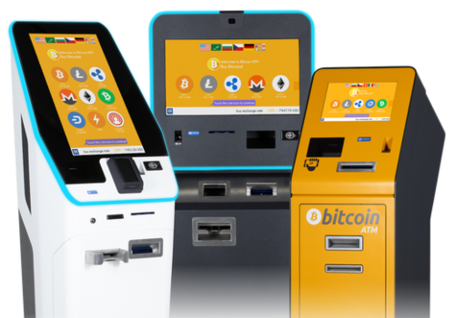

¿Qué son las Criptomonedas?
Las criptomonedas son activos digitales que utilizan criptografía para garantizar su funcionamiento y seguridad. Operan en una tecnología de cadena de bloques, que permite una red descentralizada para transacciones peer-to-peer.
Beneficios de las Criptomonedas
- Decentralización: Menor dependencia de entidades financieras tradicionales.
- Seguridad: Transacciones protegidas por tecnología avanzada de criptografía.
- Accesibilidad: Facilidad de acceso a través de internet sin necesidad de intermediarios.
Como se adquieren las Criptomonedas
- Comprar Criptomonedas
- Intercambiar Criptomonedas
- Minar Criptomonedas
Metodos de Pago
- El método de pago en general es sencillo, pero lo difícil es que las tiendas acepten el método ya que suelen ser escépticas.
- De todos modos, aquí te ponemos los pasos para ellos:
- 1. Tener Criptomonedas
- 2. Descargar una Wallet de Criptomonedas
- 3.1. Pagar con el Wallet si la tienda lo acepta
- 3.2.1. Buscar un cajero de Criptomonedas si la tienda no acepta el método de pago. Vea la imagen abajo.
- 3.2.2. Sacar el dinero desde el cajero
